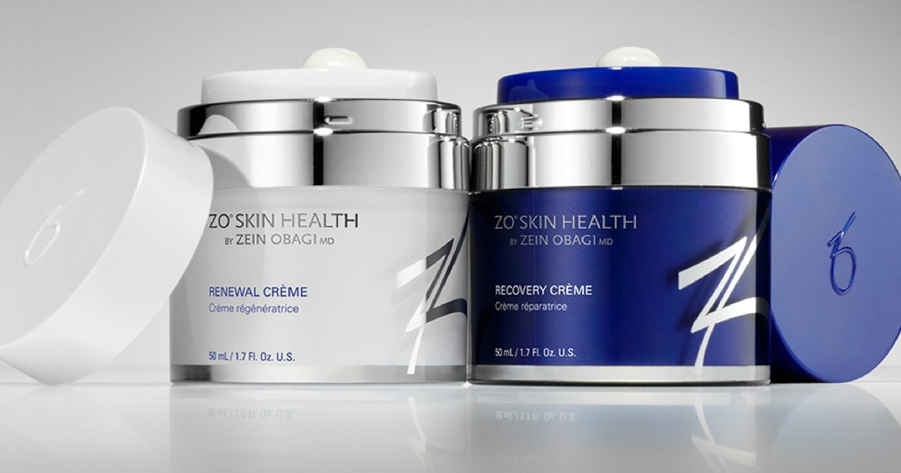

Galderma купит калифорнийскую компанию ZO Skin Health за 1,5 миллиарда долларов
Швейцарская группа по уходу за кожей Galderma объявила в среду, 14 октября, что она согласилась приобрести калифорнийскую компанию ZO Skin Health за 1,5 миллиарда долларов США (1,3 миллиарда евро), укрепив свои позиции в области медицинского ухода за кожей.
Galderma подписала соглашение о приобретении 100% дерматологической компании по уходу за кожей в рамках сделки с наличными у своих акционеров, включая средства, управляемые инвестиционной фирмой Blackstone и членами O